“Be formless, shapeless, like water. Now you put water into a cup, it becomes the cup. You put water into a bottle, it becomes the bottle. You put it in a teapot, it becomes the teapot. Now water can flow, or it can crash. Be water, my friend.” —Bruce Lee

The “Blog” layout
The “Holy Grail” layout
The “Panel” layout
“Preformations simply lack the flexibility to adapt to the ever changing” —Bruce Lee
Let's establish a new normal
“The hardest part is changing our thinking, not our CSS” —Jen Simmons
State of Browsers (2017)
and many more...
Feature Queries
.selector {
/* Styles that are supported in old browsers */
}
@supports (property:value) {
.selector {
/* Styles for browsers that support the specified property */
}
}
Flexbox and Grid
Based on the container-child relationship
Flexbox
Provides “simple and powerful tools for distributing space and aligning content in ways that web apps and complex web pages often need.”
Flexbox browser support
Flexbox basics
Pumpkin by Yayoi Kusama
Flex shorthand
flex: initial
flex: 0 1 auto, cannot grow but can shrink when there isn't enough space
flex: auto
flex: 1 1 auto, can grow and shrink to fit available space
flex: none
flex: 0 0 auto, cannot grow or shrink, AKA inflexible
flex: <positive-number>
flex: <positive-number> 1 0, can grow and shrink, extent of growth depends on flex factor
Flexbox layouts (1/2)
Flexbox layouts (2/2)
calc() and object-fit browser support
CSS Grid
Defines a two-dimensional grid-based layout system, optimized for user interface design
CSS Grid browser support
“We need to translate ideas that we find in other places, not transfer them.” —Jen Simmons
Biscuit gummies tart gingerbread wafer jujubes sweet roll. Wafer oat cake carrot cake liquorice chocolate bar chocolate cake jelly-o. Pastry donut oat cake. Fruitcake candy apple pie cake tootsie roll cotton candy candy canes. Halvah halvah chocolate jelly-o macaroon.
Macaroon dessert sweet roll dragée candy. Sweet cheesecake lemon drops. Sweet tart chocolate cake candy canes powder cotton candy. Apple pie danish chocolate cake danish bonbon. Muffin soufflé topping carrot cake chocolate. Macaroon toffee chupa chups sesame snaps gummi bears.
Shape from image
Lee Jun-fan (李振藩), known professionally as Bruce Lee, was a Hong Kong and American actor, film director, martial artist, martial arts instructor, philosopher and founder of the martial art Jeet Kune Do. He is widely considered by commentators, critics, media, and other martial artists to be one of the most influential martial artists of all time.
Writing-mode
Defines CSS features to support for various international writing modes
Vertical text
Halt and Catch Fire
“Computers aren't the thing. They're the thing that gets us to the thing.”
“How did we all get here today? The choices we made, the sheer force of our will, something like that? Here's another answer... the winds of fate. Random coincidence, some unseen hand just pushing us along. Destiny.”